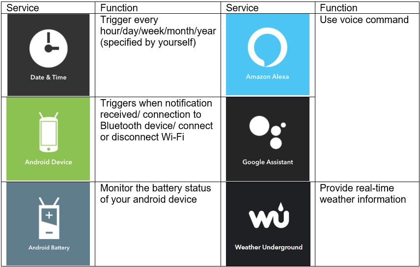
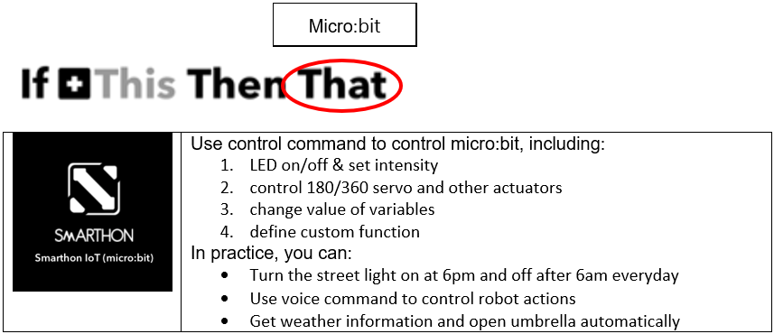
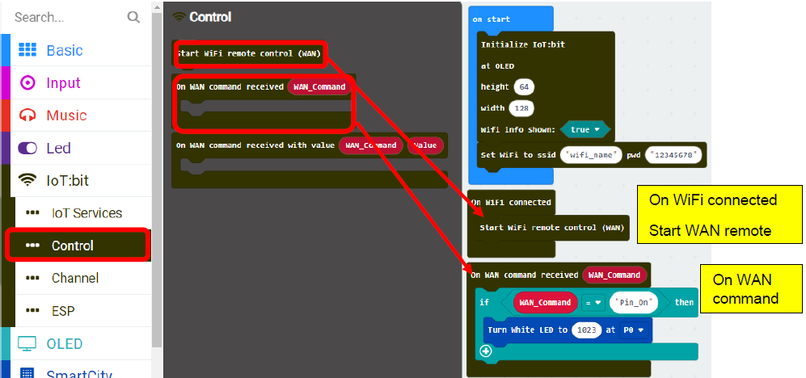
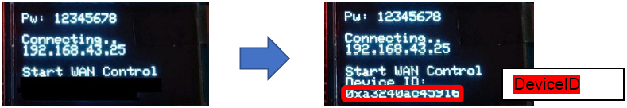
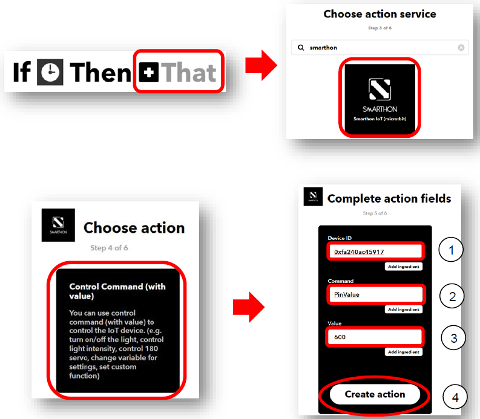

8. Chapter 4: Control your micro:bit by IFTTT Services¶
In this chapter , you will learn how to use trigger (other services) to implement action (micro:bit) by IFTTT. Below are the commonly used examples of services that can trigger micro:bit in IFTTT.

8.1. Examples of services used in IFTTT¶
With connection with different services in IFTTT, you can design your own applet with micro:bit projects using “if this then that (micro:bit)”.

You can tailor-make your own micro:bit projects by connecting Smarthon IoT (micro:bit) to over hundreds of services in cloud (IFTTT)! Create your IFTTT applet by choosing “If THIS then THAT”.

8.2. Know the API (control command)¶
http://control.smarthon.cc/publish?id=DeviceID&msg=ControlCommand

8.4. Programming (Makecode), get the Device ID¶
Goal: The below example is to turn on the light at 6 pm every day.
Step 1
After initializing, you can connect to the WiFi:
Choose IoT:bit -> Set Wi-Fi to ssid “”, pwd “”. Enter your Wi-Fi name and password

Step 2
“On WiFi connected” is an event handler.
It will be triggered once after connected with WiFi.

Step 3
Set the Wi-Fi listening on Micro:bit WAN control command action
After micro:bit connected to WiFi, it will start WiFi remote control (WAN)
If Wan command “Pin_On” is received, white LED will be turned on (intensity:1023)

Step 4
Get micro:bit Device ID
Load the program to the micro:bit and connect the micro:bit to the IoT:bit.

Wi-Fi IoT:bit will start to connect to internet, when the connection is successful, the IP Address would be shown.

Then, it will start WAN remote control. If the connection is successful, the Device ID would be shown.
Remember the Device ID, it will be used for WAN connection on the next step.

Full Solution
MakeCode: https://makecode.microbit.org/_gK16DWV6UMV0
You could also download the program from the following website:
8.5. Create your own applet to control micro:bit in IFTTT¶
Step 1
Open your browser , go to https://ifttt.com/. Register your IFTTT account and once completed, log in to your IFTTT account.

Step 2
On the top right menu, click “Create” > “Applets”

Step 3
Create a trigger for the applet
Select “This” > Choose service “Date & Time”
Choose trigger “Every day at”
Select the time (e.g. 06PM, 00 Minutes; it means every day at 6pm) and click “Create trigger”.

Step 4
Create an action for the applet
Select “That”, choose action service “Smarthon”
Choose action “Control Command”
Input your Device ID (e.g.0xa3240ac45916) and control command (e.g. Pin_On). Then click “Create action”.

Step 5
Review your applet, then click “Finish ”.
Step 6
After, the applet connection has been created it will show “connected”.
The light will be turned on at 6pm every day!

8.6. Result¶
After connected to WAN remote control, micro:bit will keep listening to the WAN command
Every day at 6pm, clock will trigger IFTTT to send out micro:bit WAN command “Pin_On”
The LED on P0 will be turned on.

8.7. Know more (Using WAN command with value in IFTTT)¶
The above example is used to give on/off command only. What if we want to pass values to the micro:bit (e.g. control the LED intensity)? Below is an example of using control command with value.
8.7.1. Know the API (control command with value)¶
http://control.smarthon.cc/publish?id=DeviceID&msg=ControlCommand&value=Value
8.7.2. Programming (Makecode), get the Device ID¶
Step 1
Set the Wi-Fi listening on micro:bit WAN control command action
Initialize IoT:bit and OLED, the micro:bit start connecting Wifi.


The LED intensity on P0 can be changed by a WAN command received with value:
Device ID: a unique ID (to identify micro:bit device to receive the command)
WAN_Command: PinValue (command for micro:bit)
Value: the intensity of the LED (the value for the command)
Step 2
Get micro:bit Device ID
Connect micro:bit to internet, IP address would be shown.

Then, it will start WAN remote control. If the connection is successful, the Device ID would be shown.
Remember the Device ID, it will be used for WAN connection on the next step.

Full Solution
MakeCode: https://makecode.microbit.org/_8sbfHLTTvReE
You could also download the program from the following website:
8.7.3. Create your own applet to control micro:bit in IFTTT¶
Step 1
You can send WAN command with value in IFTTT. In this example, click “That” to select the action

Step 2
Create an action for the applet
Select “That”, choose action service “Smarthon”
Choose action “Control Command (with value)”
Input your Device ID (e.g. 0xfa240ac45917), control command (e.g. PinValue) and Value (e.g. 600). Then click “Create action”. 
Step 3
Review your applet, then click “Finish ”.
Step 4
After, the applet connection has been created it will show “connected”.
The light will be turned on at 6pm every day!

8.7.4. Result¶
After connected to WAN remote control, micro:bit will keep listening to the WAN command
Every day at 6pm, clock will trigger IFTTT to send out micro:bit WAN command “PinValue” (with value “600”)
The LED on P0 will be turned on (with light intensity: 600).